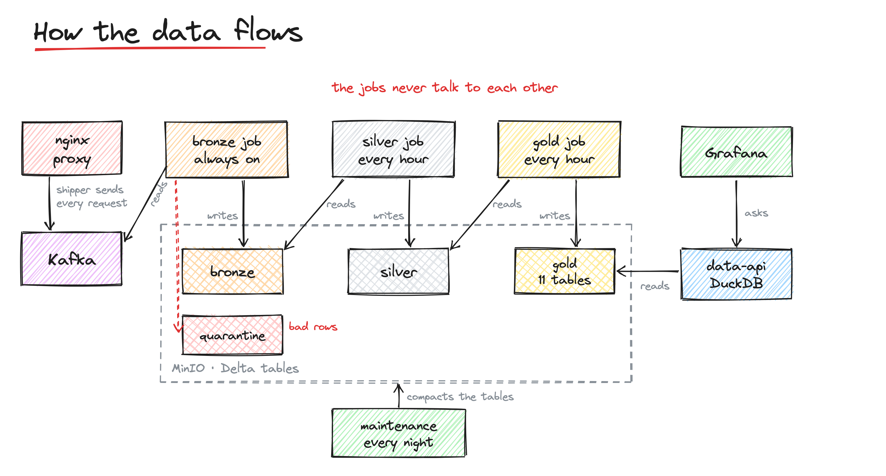
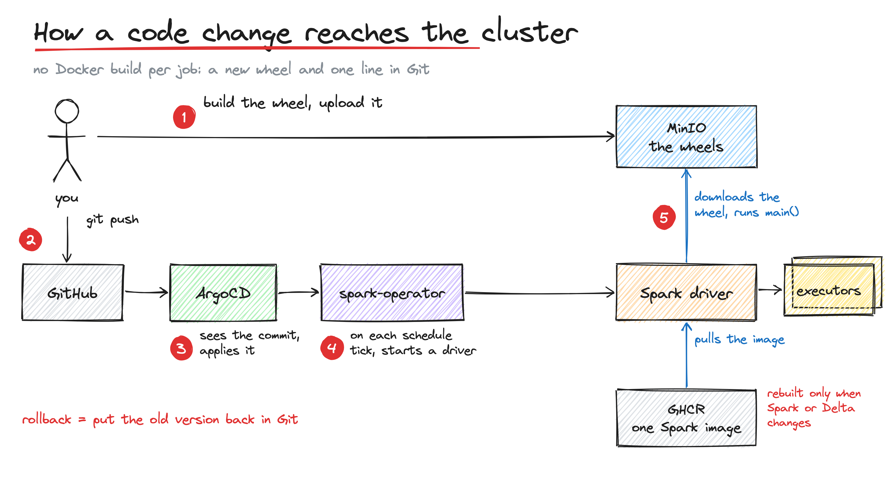
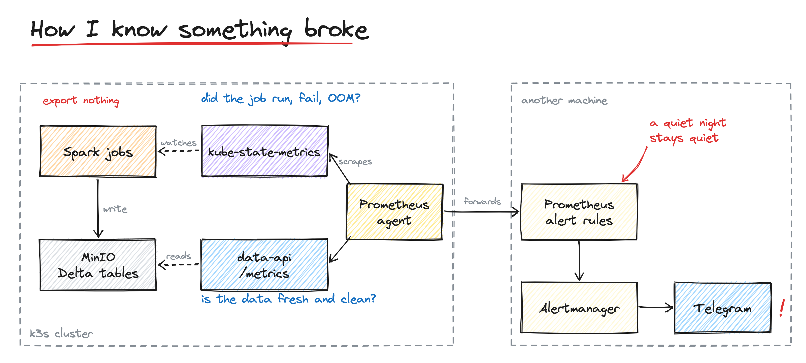

A lakehouse in my basement Link to heading
I run a few websites from a small Kubernetes cluster at home. All public
traffic goes through one reverse proxy, and its access log was already being
sent to Kafka. Then nothing happened to it. I wanted to answer simple
questions: how many people visit each site, which pages they read, how fast
the pages are, and who is scanning for /wp-admin this week.
An analytics SaaS would have answered most of that in an afternoon. I built a small lakehouse instead, partly because I wanted to own the data and partly because I wanted to see how far I could take a “real” data platform design on hardware that fits under a desk.
This post is about the design: what the parts are, why I chose them, and what each choice costs.
Start with the constraints Link to heading
Most decisions below make sense only with the constraints in mind:
- Small, fixed hardware. A bare-metal k3s cluster with two amd64 nodes and one arm64 node. No autoscaler. After the existing workloads, the data platform has about one free amd64 CPU.
- Things that already exist. Kafka, an S3-compatible object store (MinIO on its own VM), ArgoCD and cert-manager were already there. The platform should use them, not provision its own.
- Low traffic. A few thousand requests per day. Sometimes nothing arrives for hours.
- One person operating it. Whatever I build, I have to be able to fix it at 11 p.m. without remembering how it works.
Low traffic and one free CPU look like reasons to skip Spark entirely, and I will come back to that. But the goal was a platform that could take more data sources without being redesigned, so I designed for that and sized everything small.
The big picture Link to heading

Data flows in one direction:
- The proxy writes one JSON line per request. A log shipper sends it to a Kafka topic.
- A streaming Spark job reads Kafka and writes the bronze Delta table on MinIO. It is the only job that runs all the time.
- An hourly Spark job turns new bronze rows into silver: one clean, typed row per request.
- Another hourly Spark job builds gold: eleven small aggregated tables, made for dashboards.
- A small query API reads gold and serves it to Grafana.
- A nightly job keeps the Delta tables compact.
The jobs never talk to each other. Each one reads the layer below from object storage and writes the next layer. If silver is broken for a day, bronze keeps collecting data, and silver catches up when it is fixed.
Underneath, everything is deployed with GitOps: ArgoCD watches the Git repo, and the Kubeflow spark-operator turns Spark job definitions into driver and executor pods.
Decision 1: Spark for both streaming and batch Link to heading
The obvious question: why Spark for a few thousand rows a day? DuckDB or a Python script with a cron job would be faster and far lighter.
I chose Spark Structured Streaming plus Delta Lake because one engine covers everything: the always-on Kafka consumer, the hourly batch jobs, and table maintenance. They share one runtime image, one library, and one way to deploy. I also looked at Flink for the streaming part. It is a better streaming engine, but it would mean running and learning a second engine next to Spark for the batch layers. Kafka in front acts as a buffer, so the streaming job can be slow or down for a while without losing anything.
The cost is real. A Spark driver plus one executor needs about a gigabyte of memory each, and a pod takes time to start. With one free CPU, every job asks for a small fraction of a core (200–400 millicores), and the streaming job runs with a single executor. Spark here is oversized for today’s data but sized for the platform I want.
Decision 2: one generic image, business logic as Python wheels Link to heading
In many Spark-on-Kubernetes setups, each job is a Docker image. Change one line, build an image, push it, update the manifest. I didn’t want that loop.
Instead there is one generic Spark image with Spark, Delta, the Kafka
connector and the S3 libraries, and a small launcher script. Every job’s
manifest points to that same launcher and sets a few environment variables:
the job name, its version, and which Python module to run. At start-up, the
launcher downloads the job’s wheel (and the shared SDK wheel) from an
artifacts bucket in MinIO and runs it.

A release is: build the wheel, upload it, change APP_VERSION in the
manifest, push. ArgoCD applies it, and the next scheduled run uses the new
code. The image changes only when Spark or Delta changes, a few times a year.
What this costs:
- Versions must never be overwritten. If two different wheels share a version, the cluster runs whichever is in storage, and nothing tells you. Every change gets a new version, and old versions stay for rollback.
- Naming is rigid. The launcher builds the wheel’s path from the job name, so the job name, the Python package name and the storage folder must match exactly.
- No Python UDFs. Spark only sends
.zip/.eggfiles to executor Python processes, not.whl. Instead of working around it, I made a rule: all transformations are native Spark expressions. A test fails if anyone adds a UDF. This turned out to be a good rule anyway: no Python serialization overhead, and executors never need our code. - Wheel publishing is still manual. The image has CI. The wheels don’t yet. It’s the main thing I’d fix next.
Decision 3: a monorepo split by responsibility Link to heading
The repo has five top-level parts that could have been five repos:
| Part | What it owns |
|---|---|
infra/ |
The platform: spark-operator, namespaces, quotas, network policies, ArgoCD apps |
spark-image/ |
The generic runtime image |
spark-sdk/ |
The shared library: contracts, data quality, read/write helpers, pipeline base classes |
spark-jobs-src/ |
The business logic, one Python package per job |
spark-manifests/ |
The job definitions that ArgoCD applies |
Each part changes at a different speed. The platform and the image change rarely. The SDK changes when I add a capability. Jobs and manifests change often. Keeping them separate makes it clear what a change touches. One repo means one place to search and one pull request for a change that crosses parts.
Decision 4: organise everything by system first Link to heading
At first, tables lived under bronze/nginx_logs, silver/... — layer first.
I flipped it to system first: nginx-logs/bronze, nginx-logs/silver,
nginx-logs/gold/<table>. Code, manifests and checkpoints follow the same
shape.
The reason is ownership. A pipeline is one system going through its layers. If I want to delete, back up, grant access to, or understand the “nginx logs” pipeline, it’s one prefix. With layer-first, it would be spread across three. The cost was a careful migration of a live streaming table, but doing it early was cheap.
Decision 5: fix data at the source, not in Spark Link to heading
The original proxy log was missing things I needed: timestamps only had one-second resolution, there was no request ID, and nothing said whether a request came through Cloudflare. No amount of Spark can recover data that was never logged.
So I changed the log format on the proxy itself: millisecond timestamps, a request ID, upstream timings, browser fetch headers, and Cloudflare fields. The real visitor IP comes from Cloudflare’s header only when the connection really comes from a Cloudflare edge; otherwise anyone could fake it. The format has a version field, so old and new lines can be told apart.
The lesson I keep relearning: the cheapest data quality fix is upstream.
Decision 6: data contracts, enforced by the shared library Link to heading
This is the decision I’m happiest with.
Every table has a contract: a YAML file that declares its columns, types, partitioning, how it’s written, and quality checks. Here is a trimmed one for a gold table:
metadata:
layer: gold
table: traffic_hourly
insert_mode: {type: replace_where, column: date, lookback_days: 2}
partitioning: [date]
data:
primary_key: [date, hour, app]
schema:
- {name: date, type: date, required: true}
- {name: hour, type: integer, required: true}
- {name: app, type: string, required: true}
- {name: requests, type: long-integer, required: true}
quality:
- {check: accepted_values, column: app, values: [arede, jellyfin, other]}
- {check: range, column: hour, min: 0, max: 23}
The shared SDK does the rest. Every pipeline runs the same steps, defined once
in a base class: create or evolve the table from the contract, read the
source, transform, based on the contract, run the quality checks, write.
A job only provides its contract and a transform function. The bronze job’s
main.py is about ten lines.
Three ideas carry most of the value:
- Nothing disappears silently. Rows that fail a hard check go to a
quarantine table, with the reasons attached. Unknown fields and values that
don’t fit their type go to a
_rescued_datacolumn. When the log format changed, all the old-format rows showed up in quarantine, counted and explainable, instead of becoming nulls. - Schema changes are deliberate. Adding a column is allowed. Changing a type or dropping a column fails loudly.
- Bronze is typed, not raw. Many lakehouses keep bronze as raw strings and
parse in silver. I parse in bronze, against the contract, because it catches
bad data at the door. The raw message still survives where it matters:
anything that doesn’t fit goes to
_rescued_data, and Kafka keeps the original for its retention period.
The cost is ceremony. A new column touches a contract, sometimes two or three (the allowed list of apps lives in the silver contract and in every gold contract with an app column). Contracts are versioned and bumped on every change. For a one-person project this sometimes feels heavy. I still think it pays for itself the first time bad data shows up and you know exactly where it is.
Decision 7: incremental silver, windowed gold Link to heading
Silver runs hourly and processes only what’s new. It reads bronze as a Delta stream with an “available now” trigger: start, process every bronze commit since the last run, stop. Spark’s checkpoint remembers where it was. So I get streaming’s bookkeeping with batch’s cost: no pod running between runs. Duplicates are removed by the Kafka partition and offset, which uniquely identify a message.
Gold is different. Its tables are aggregates (requests per hour, sessions per day), and late data changes yesterday’s numbers. Every hour, gold rewrites the last two days of each table and leaves older days alone. That absorbs late rows without ever recomputing history.
Gold also has a freshness gate: each table remembers which silver version and which code version it was built from. If neither changed, the table is skipped. Most hours on a quiet site, gold starts, sees nothing new, and exits.
How gold gets triggered took the most thought. The options:
| Option | Why not |
|---|---|
| Eleven separate jobs, one per table | Eleven pod start-ups every hour on one CPU |
| Silver and gold in the same job | Breaks “one job per layer”; one failure blocks both |
| Silver starts gold when it finishes | Jobs creating jobs outside Git; more permissions |
| A workflow engine (Argo Workflows) | A new controller for a single dependency |
| One gold job, scheduled 15 minutes after silver, with the gate | Chosen |
The cost of the chosen option: if silver runs late, gold builds from the previous silver version and catches up an hour later. For dashboards about web traffic, an extra hour of delay is fine. When a second system needs real dependency chains, a workflow engine will be worth it.
Decision 8: compact each partition once Link to heading
Streaming every ten minutes and rewriting gold every hour produce many small
files, and small files make every read slow. A nightly maintenance job runs
Delta’s OPTIMIZE (merge small files) and VACUUM (delete files no longer
referenced).
The first version optimized whole tables every night. That cost grows with every day of data, and it was mostly wasted: old partitions were already compact, and gold’s last two days get rewritten an hour later anyway.
Now each partition is compacted once, after it “closes”: the day after for bronze and silver, three days after for gold (after its rewrite window). A weekly job goes back over the last seven closed days for stragglers. The cost of maintenance no longer grows with the size of the table.
The tradeoff: rows that arrive more than a week late stay in small files until I run a full compaction by hand. At this scale, that’s an acceptable edge case.
Decision 9: serving with DuckDB, not a query cluster Link to heading
Grafana runs on a separate machine and needs to query gold. The usual answer is Trino or a Spark SQL server. Both are big, always-on services, and I have one CPU.
Gold tables are small by design, so I wrote a tiny query API: FastAPI plus DuckDB, which can read Delta tables straight from S3. A few design choices:
- The server owns the SQL. There is no “run this query” endpoint. There’s one route per table name, the name is checked against an allowlist, and the only inputs are typed parameters (date range, app, row limit). It’s on the LAN with an API key, but I still didn’t want arbitrary SQL against storage.
- Cache keyed on the Delta version. Checking a table’s latest version is one storage listing, much cheaper than a scan. If the version hasn’t changed, the cached answer is still correct. Dashboards refreshing every minute cost almost nothing.
- It runs on any node. The API image is built for both amd64 and arm64, so it can live on the arm64 node and leave the scarce amd64 CPU for Spark.
The cost: the API only knows the tables I’ve listed, so a new gold table means a code change. Heavy aggregation over long ranges happens in Grafana, not in the API. And DuckDB’s Delta and S3 support had some sharp edges that only showed up against real storage, never in local tests, which is its own lesson.
Decision 10: monitor from the outside Link to heading
I wanted a Telegram message when something breaks. Prometheus and Alertmanager already ran on another machine, so inside the cluster I added a lightweight Prometheus agent that scrapes cluster targets and forwards everything to that Prometheus.

The interesting part is what I didn’t do: the Spark jobs export no metrics. The standard approach would be for every job to push metrics to a Pushgateway. That means changing the shared library, republishing every job, running another service, and a lost push fails silently.
Instead I ask two questions, each answered from outside the jobs:
- Did the job run, fail, or run out of memory? kube-state-metrics already watches Kubernetes objects. Configured to read the spark-operator’s custom resources, it reports each job’s state and each schedule’s last run.
- Is the data fresh and clean? The query API already reads the lakehouse.
It got a
/metricsendpoint that reports, per table, the last write time, the newest event time, and today’s quarantine counts. A background thread refreshes it every five minutes, so scrapes never touch storage. This measures what dashboard users actually see.
The other important choice is freshness relative to the layer before. With low traffic, “silver hasn’t changed in two hours” is normal at night. So only bronze has an absolute threshold (six hours with no new row). Silver alerts if it falls more than two hours behind bronze. Gold alerts if it falls more than two hours behind silver. A quiet night stays quiet. A broken hourly job fires.
The cost: I lose exact Kafka lag and job run times, which a job pushing its own metrics would give me. For now, “is it running” plus “is the data fresh” covers what I actually want to be woken up for.
The tradeoffs, in one table Link to heading
| Decision | What I get | What it costs |
|---|---|---|
| Spark for streaming and batch | One engine, one image, one deploy path | Heavy for today’s data; tight CPU budget |
| One image + wheels | Releases without image builds | Strict versioning and naming; no UDFs; manual wheel publish |
| Contracts in the SDK | Typed tables, quarantine, safe schema changes, tiny jobs | Ceremony on every column change |
| Incremental silver | Only new data processed, no idle pod | Checkpoints to care for |
| Windowed gold + gate | Absorbs late data, idle hours are cheap | Up to an hour extra delay |
| Compact closed partitions | Maintenance cost stays flat | Very late rows wait for a manual run |
| DuckDB query API | No query cluster, cheap cached reads | Every new table is a code change |
| Monitoring from outside | No job changes, measures what users see | No Kafka lag or run times |
What I learned Link to heading
- Constraints are a design tool. One free CPU ruled out most “standard” answers (a query cluster, many small jobs, per-job images) and pushed me to simpler ones that I’d probably pick again anyway.
- Make bad data visible, not absent. Quarantine and rescued columns turned every data surprise into a count I could look at.
- Design for idle time. At low traffic, most runs find nothing to do. The platform is cheap because “nothing to do” is fast everywhere.
- Test against the real thing. Almost every serious bug only appeared against real object storage or the real cluster, never in local tests.
- Spark on Kubernetes has a long tail of small things (permissions, network policies, node selectors, non-root users). None is hard. All of them are in the way the first time.
What’s next Link to heading
- Automate wheel publishing, so a release is only a merge.
- A multi-arch Spark image, so Spark can use the arm64 node too.
- Region and city for visitors, which needs Cloudflare’s location headers in the log and a contract change.
- A second data system. That will be the real test of whether the layout, the SDK and the monitoring were designed well, or just designed for one case.